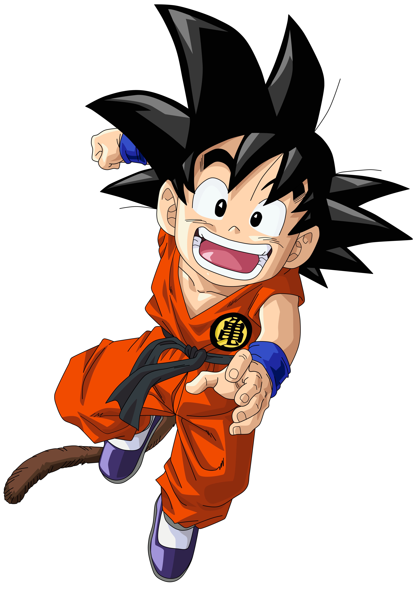
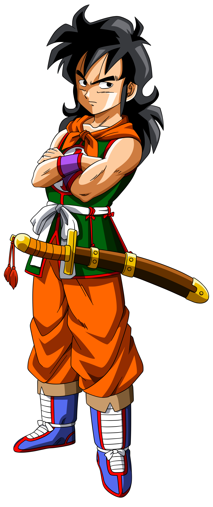
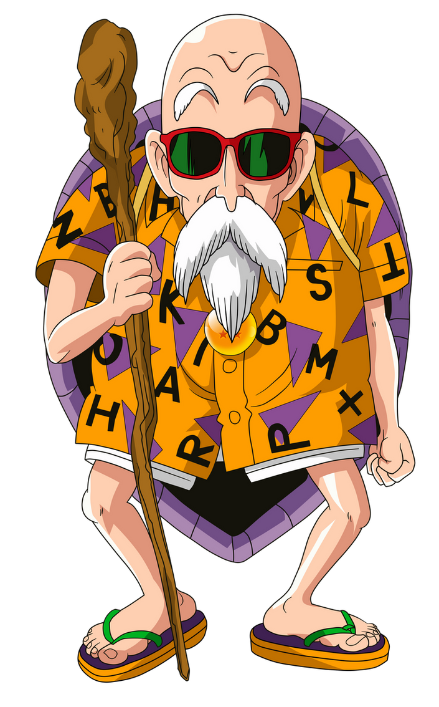
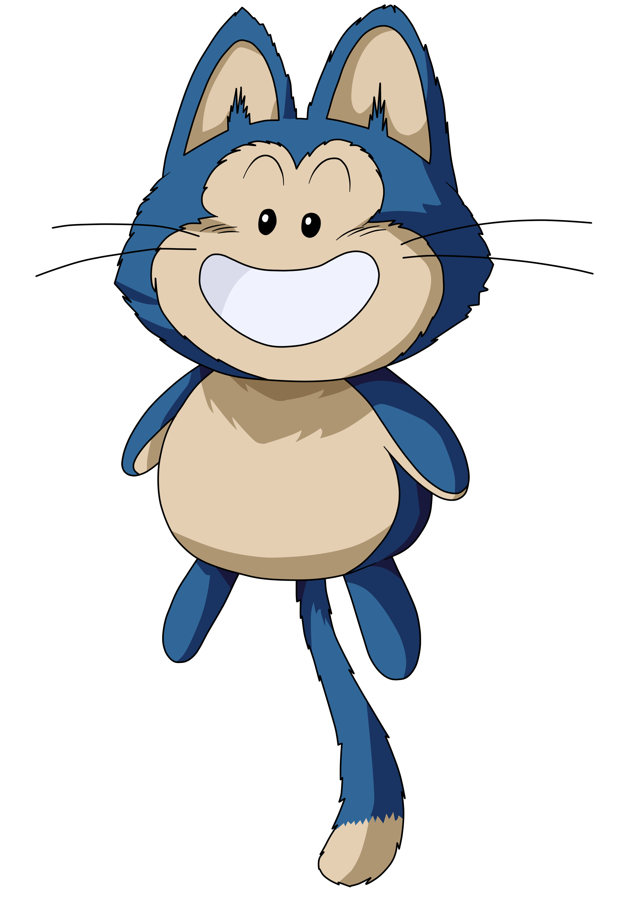
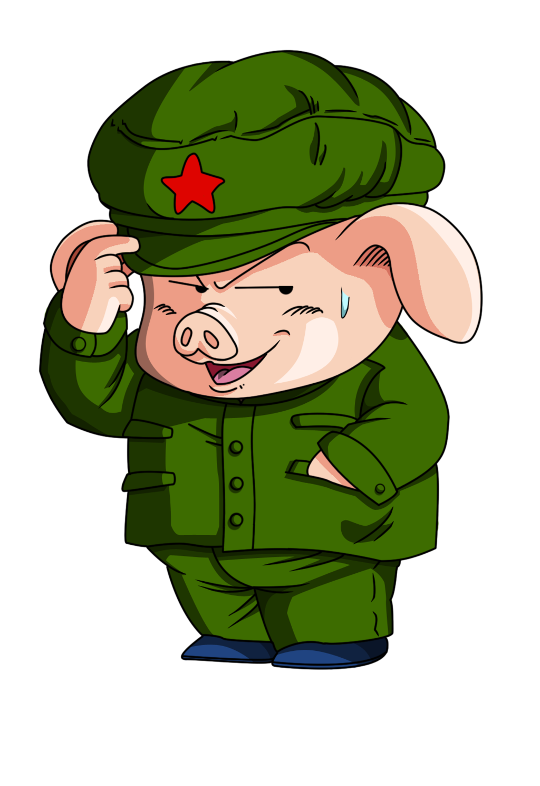
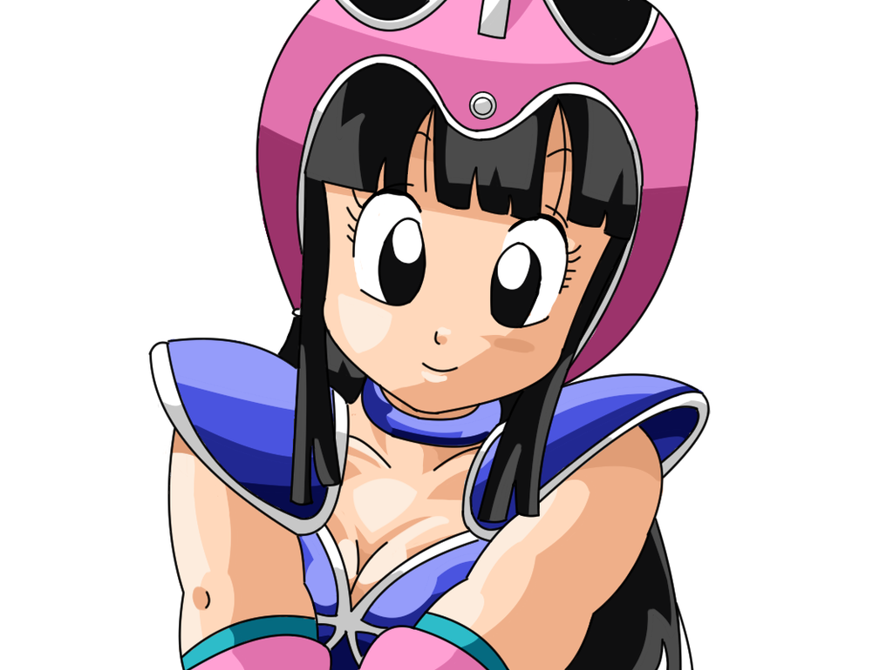
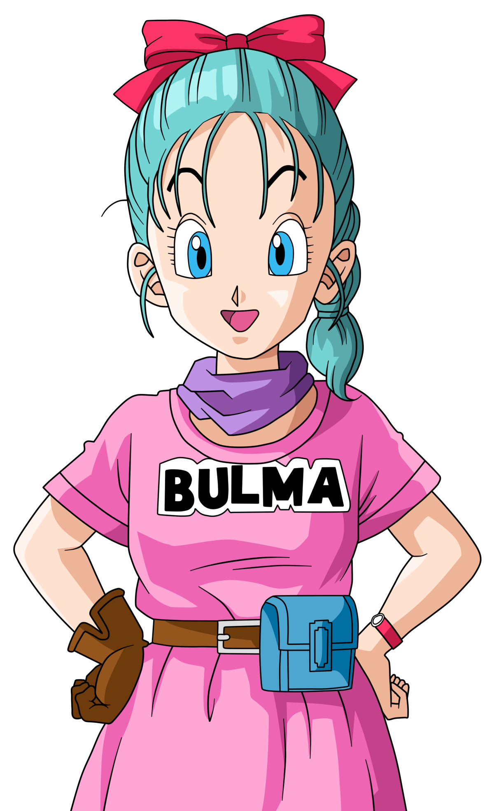

Dragon Ball
- Description :
- Resumé :
- Personnage amblématiques :
| Auteur | Type de Manga | Genre | Thème | Date | Nombre de volumes |
|---|---|---|---|---|---|
Akira Toriyama |
Shonen | Nekketsu, Action, aventure, science-fiction, comédie, humour, gag | Arts martiaux | 20 novembre 1984 – 23 mai 1995 | 42 |
L'histoire de Dragon Ball se déroule dans The World, un univers imaginaire ayant des ressemblances avec la Terre.
Elle retrace le parcours d'un jeunne enfant innocent et naif nommé Son Goku, depuis l'enfance jusqu'à l'âge adulte.
Accompagné de ses amis, il cherche à plusieurs reprises les sept Dragon Balls dispercées sur toute la Terre.
Il s'agit de boules de cristal magiques qui permettent, si elles sont réunies, de faire apparaître le dragon Shenron, capable d'exaucer le souhait que quiconque prononce face à lui, en passant par le souhait d'une culotte à la résuréction de quelqu'un, grâce à une formule spécifique.
Ainsi dans sa quète des Dragon Balls, Sangoku est amené à combattre des adversaires de plus en plus forts et à faire face à de nombreuse épreuve avec ses amis, avec lesquelles il devient de plus en plus fort toute aux long de ses péripécies.
| SonGoku | Yamcha | Tortue Genial | Puar | SonGohan | Oolong | Kuririn | Chi Chi | Bulmas |
|---|---|---|---|---|---|---|---|---|
|  |
 |
 |
 |
 |
 |
 |
 |
 |